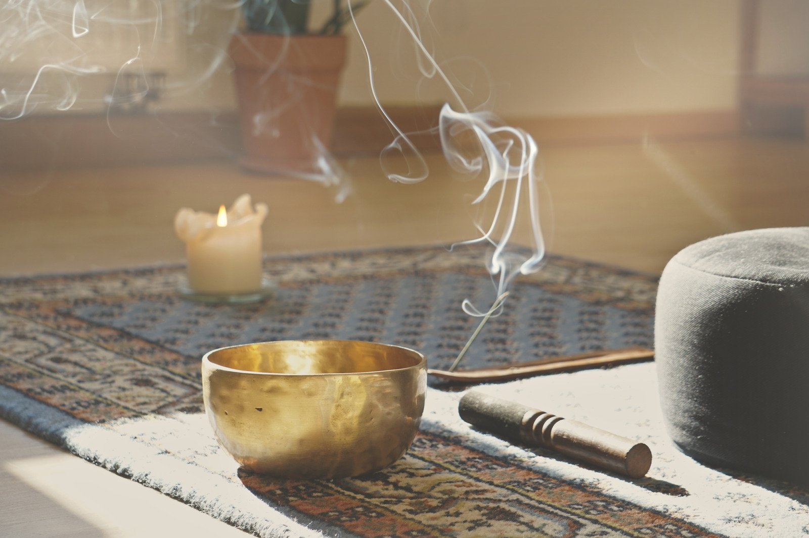
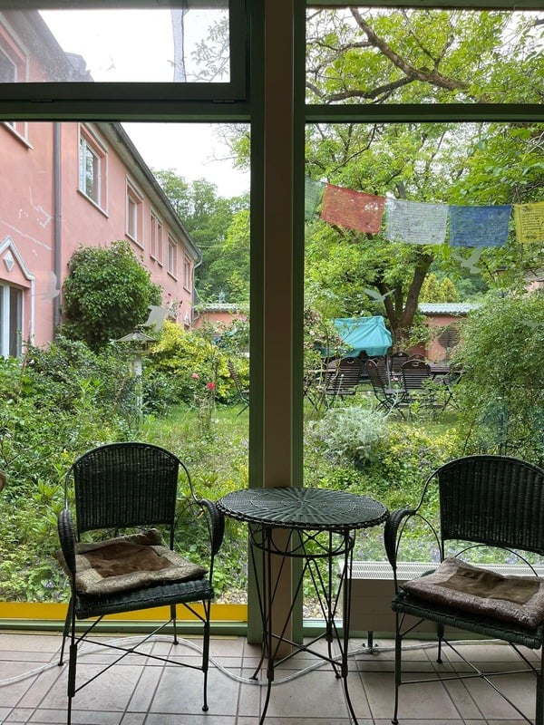
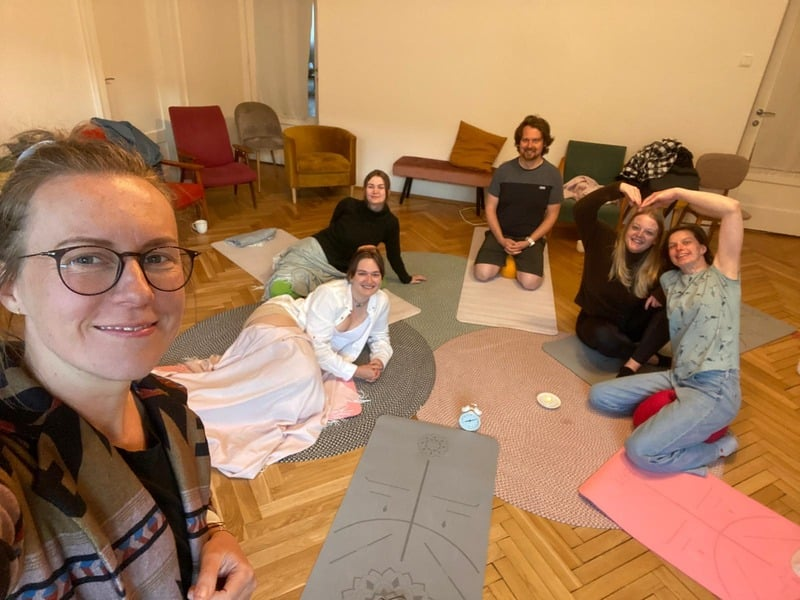
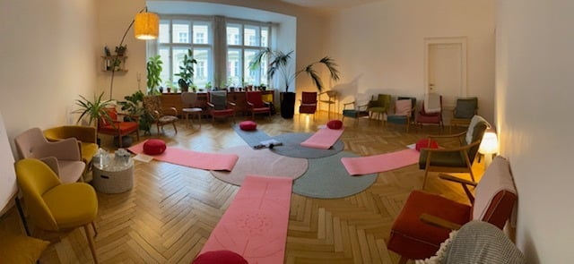
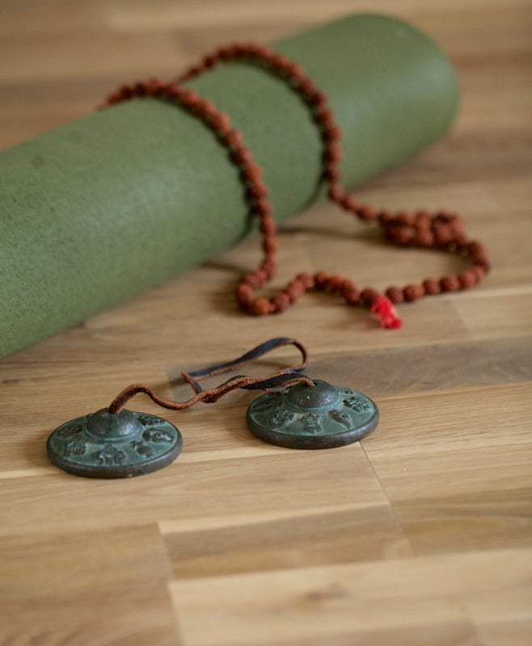

všímavost
/ mindfulness
Abychom byli živější v životě, který žijeme.
Abychom žili život, který máme k dispozici.

Všímavost nám pomáhá lépe zvládat stres tím, že měníme náš vztah k němu.
Všímavost je schopnost zaměřovat pozornost na to, co se děje v přítomném okamžiku a laskavým způsobem to pozorovat. Umožňuje nám být si vědomi toho, co zažíváme — vnímat, co se děje v našem těle, uvědomovat si jaké pocity cítíme a jaké myšlenky máme. A také jak se tohle všechno neustále proměňuje.
Kromě toho nám umožňuje vnímat, co se děje kolem nás — ve vztazích, kterých se účastníme, a jak ovlivňují naše prožívání.
Na základě všímavosti se můžeme lépe rozhodovat, jak se zachováme, a také nám pomáhá zvládat to, co nemáme ve svých rukou.
Pravidelná měsíční mozaika informací, tipů a zamyšlení ze světa všímavosti (mindfulness), psychologie a psychoterapie.
„Spočíváme-li v přítomném okamžiku s plným uvědoměním, další okamžik bude díky tomu velmi odlišný. Pak můžeme přijít na tvořivé způsoby, jak plně žít náš život — ten jediný, který máme."Jon Kabat-Zinn
mindfulness-based stress reduction (MBSR)
K rozvoji všímavosti vede mnoho cest a velmi jí prospívá pravidelnost a dobrá podpora. Obojí je obsaženo v kurzech všímavosti — jednou z možností je kurz Mindfulness-Based Stress Reduction (MBSR), 8-týdenní trénink všímavosti.
V něm se učí základní techniky všímavosti (meditace body scan, všímavá jóga, meditace v sedě) spolu s tím, jak všímavost rozvíjet v běžném životě. Obojí vede k většímu rozpoznávání automatických stresových reakcí a spolu s tím vystávají nové způsoby reagování na stres.
MBSR je evidence-based metoda, to znamená, že jeho účinnost je potvrzena množstvím studií.

Výzkumu a rozvoji mindfulness se v ČR věnuji v Akademickém centru mindfulness při MUNI.
aktuální otevřené lekce
link: meet.google.com/aps-izgt-drm
Setkání tvoří vedená meditace (v sedě, v leže, v chůzi, případně v pohybu) a mohou sloužit jako podpora domácí meditační praxe anebo jako ochutnávka různých mindfulness technik.
Není třeba se hlásit dopředu, stačí se připojit. Setkání jsou zdarma.
kde společně kultivovat všímavost?

mindfulness-based stress reduction (MBSR)
Kurz MBSR tvoří 8 dvouhodinových setkání ve skupině 1× týdně, 1 celodenní setkání a denní praxe doma (45 minut). Učí se v něm základní techniky všímavosti (meditace body scan, všímavá jóga, meditace v sedě) spolu s tím, jak všímavost rozvíjet v běžném životě.

mindfulness workshopy a otevřené lekce
Workshop je příležitostí vyzkoušet si některé mindfulness techniky a seznámit se se základními principy všímavosti.

individuální setkání
Pokud máte zájem o individuální setkání zaměřené na rozvoj všímavosti nebo zvládání stresu za pomoci mindfulness, napište mi. Setkání jsou možná také online.